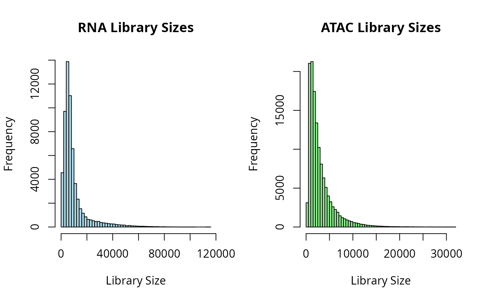

Differential epiPot analysis: Prepare data
Source:vignettes/articles/differential_1_prepare_data.Rmd
differential_1_prepare_data.Rmd
library(conflicted)
library(GEOquery)
library(tidyverse)
library(rhdf5)
library(Matrix)
library(org.Hs.eg.db)
library(epiPot)
conflicts_prefer(base::intersect)We’ll download single-cell RNA- and ATAC-seq data published GEO Series GSE174367 (Single-nucleus chromatin accessibility and transcriptomic characterization of Alzheimer’s disease),
DATA_PATH <- tools::R_user_dir("epipot_articles", "cache")
dir.create(DATA_PATH, showWarnings = FALSE)
getGEOSuppFiles("GSE174367", baseDir = DATA_PATH)Load data
Prepare the scATAC-seq count matrix …
atac_counts_GSE174367_file <-
str_glue("{DATA_PATH}/GSE174367/GSE174367_snATAC-seq_filtered_peak_bc_matrix.h5")
atac_counts_GSE174367 <- h5read(atac_counts_GSE174367_file, "/matrix/data")
peak_coordinates <- h5read(atac_counts_GSE174367_file, "/matrix/features/name")
peak_coordinates <- gsub(":", "-", peak_coordinates)
atac_barcodes <- h5read(atac_counts_GSE174367_file, "/matrix/barcodes")
atac_indices <- h5read(atac_counts_GSE174367_file, "/matrix/indices")
atac_indptr <- h5read(atac_counts_GSE174367_file, "/matrix/indptr")
atac_shape <- h5read(atac_counts_GSE174367_file, "/matrix/shape")
atac_matrix <- sparseMatrix(
i = atac_indices + 1,
p = atac_indptr,
x = atac_counts_GSE174367,
dims = atac_shape
)
rownames(atac_matrix) <- peak_coordinates
colnames(atac_matrix) <- atac_barcodes… and metadata.
ATAC_metadata_GSE174367 <-
read_csv(str_glue("{DATA_PATH}/GSE174367/GSE174367_snATAC-seq_cell_meta.csv.gz"))
#> Rows: 130418 Columns: 12
#> ── Column specification ────────────────────────────────────────────────────────
#> Delimiter: ","
#> chr (8): Sample.ID, Sex, Tangle.Stage, Plaque.Stage, Diagnosis, cluster, Cel...
#> dbl (4): Batch, Age, PMI, RIN
#>
#> ℹ Use `spec()` to retrieve the full column specification for this data.
#> ℹ Specify the column types or set `show_col_types = FALSE` to quiet this message.Prepare the scRNA-seq count matrix …
RNA_counts_GSE174367 <-
str_glue("{DATA_PATH}/GSE174367/GSE174367_snRNA-seq_filtered_feature_bc_matrix.h5")
rna_counts <- h5read(RNA_counts_GSE174367, "/matrix/data")
gene_names <- h5read(RNA_counts_GSE174367, "/matrix/features/name")
rna_barcodes <- h5read(RNA_counts_GSE174367, "/matrix/barcodes")
rna_indices <- h5read(RNA_counts_GSE174367, "/matrix/indices")
rna_indptr <- h5read(RNA_counts_GSE174367, "/matrix/indptr")
rna_shape <- h5read(RNA_counts_GSE174367, "/matrix/shape")
rna_matrix <- sparseMatrix(
i = rna_indices + 1,
p = rna_indptr,
x = rna_counts,
dims = rna_shape
)
rownames(rna_matrix) <- gene_names
colnames(rna_matrix) <- rna_barcodes… and metadata.
RNA_metadata_GSE174367 <-
read_csv(str_glue("{DATA_PATH}/GSE174367/GSE174367_snRNA-seq_cell_meta.csv.gz"))
#> Rows: 61472 Columns: 12
#> ── Column specification ────────────────────────────────────────────────────────
#> Delimiter: ","
#> chr (8): Barcode, SampleID, Diagnosis, Cell.Type, cluster, Sex, Tangle.Stage...
#> dbl (4): Batch, Age, PMI, RIN
#>
#> ℹ Use `spec()` to retrieve the full column specification for this data.
#> ℹ Specify the column types or set `show_col_types = FALSE` to quiet this message.Align barcodes.
atac_meta_barcodes <- ATAC_metadata_GSE174367$Barcode
rna_meta_barcodes <- RNA_metadata_GSE174367$Barcode
common_barcodes_rna <- intersect(rna_barcodes, rna_meta_barcodes)
common_barcodes_atac <- intersect(atac_barcodes, atac_meta_barcodes)
# RNA
rna_matrix_filtered <-
rna_matrix[, rna_barcodes %in% common_barcodes_rna]
rna_metadata_filtered <-
RNA_metadata_GSE174367[rna_meta_barcodes %in% common_barcodes_rna, ]
rna_metadata_filtered <- rna_metadata_filtered[match(colnames(rna_matrix_filtered),
rna_metadata_filtered$Barcode), ]
stopifnot(all(colnames(rna_matrix_filtered) == rna_metadata_filtered$Barcode))
# ATAC
atac_matrix_filtered <-
atac_matrix[, atac_barcodes %in% common_barcodes_atac]
atac_metadata_filtered <-
ATAC_metadata_GSE174367[atac_meta_barcodes %in% common_barcodes_atac, ]
atac_metadata_filtered <- atac_metadata_filtered[match(colnames(atac_matrix_filtered),
atac_metadata_filtered$Barcode), ]
stopifnot(all(colnames(atac_matrix_filtered) == atac_metadata_filtered$Barcode))Plot library size.
rna_library_sizes <- colSums(rna_matrix_filtered)
atac_library_sizes <- colSums(atac_matrix_filtered)
par(mfrow = c(1, 2))
hist(rna_library_sizes, breaks = 50, col = "lightblue",
main = "RNA Library Sizes", xlab = "Library Size")
hist(atac_library_sizes, breaks = 50, col = "lightgreen",
main = "ATAC Library Sizes", xlab = "Library Size")
Split dataset by condition.
# ATAC
atac_AD_barcodes <-
ATAC_metadata_GSE174367$Barcode[ATAC_metadata_GSE174367$Diagnosis == "AD"]
atac_control_barcodes <-
ATAC_metadata_GSE174367$Barcode[ATAC_metadata_GSE174367$Diagnosis == "Control"]
atac_matrix_AD <- atac_matrix_filtered[, colnames(atac_matrix_filtered)
%in% atac_AD_barcodes]
atac_metadata_AD <- ATAC_metadata_GSE174367[ATAC_metadata_GSE174367$Barcode
%in% atac_AD_barcodes, ]
atac_matrix_control <- atac_matrix_filtered[, colnames(atac_matrix_filtered)
%in% atac_control_barcodes]
atac_metadata_control <- ATAC_metadata_GSE174367[ATAC_metadata_GSE174367$Barcode
%in% atac_control_barcodes, ]
# RNA
rna_AD_barcodes <-
RNA_metadata_GSE174367$Barcode[RNA_metadata_GSE174367$Diagnosis == "AD"]
rna_control_barcodes <-
RNA_metadata_GSE174367$Barcode[RNA_metadata_GSE174367$Diagnosis == "Control"]
rna_matrix_AD <- rna_matrix_filtered[, colnames(rna_matrix_filtered)
%in% rna_AD_barcodes]
rna_metadata_AD <- RNA_metadata_GSE174367[RNA_metadata_GSE174367$Barcode
%in% rna_AD_barcodes, ]
rna_matrix_control <- rna_matrix_filtered[, colnames(rna_matrix_filtered)
%in% rna_control_barcodes]
rna_metadata_control <- RNA_metadata_GSE174367[RNA_metadata_GSE174367$Barcode
%in% rna_control_barcodes, ]epiPot-specific preprocessing
Aggregate counts.
rna_mat_agg_cont <- aggregate_count_matrix(
counts = rna_matrix_control,
cell_types = rna_metadata_control$Cell.Type,
samples = rna_metadata_control$SampleID
)
rna_mat_agg_AD <- aggregate_count_matrix(
counts = rna_matrix_AD,
cell_types = rna_metadata_AD$Cell.Type,
samples = rna_metadata_AD$SampleID
)
atac_mat_agg_cont <- aggregate_count_matrix(
counts = atac_matrix_control,
cell_types = atac_metadata_control$Cell.Type,
samples = atac_metadata_control$Sample.ID
)
atac_mat_agg_AD <- aggregate_count_matrix(
counts = atac_matrix_AD,
cell_types = atac_metadata_AD$Cell.Type,
samples = atac_metadata_AD$Sample.ID
)Annotate ATAC-seq peaks.
atac_mat_agg_cont_anno <- annotate_atac_peaks(atac_mat_agg_cont)
atac_mat_agg_AD_anno <- annotate_atac_peaks(atac_mat_agg_AD)Merge matrices.
merged_mat_cont <- merge_count_matrices(
rna_mat_agg_cont,
atac_mat_agg_cont_anno
)
merged_mat_ad <- merge_count_matrices(
rna_mat_agg_AD,
atac_mat_agg_AD_anno
)Final polishing.
# add condition labels
colnames(merged_mat_cont) <- paste0(colnames(merged_mat_cont), ":CTRL")
colnames(merged_mat_ad) <- paste0(colnames(merged_mat_ad), ":AD")
merged_matrix <- cbind(merged_mat_cont, merged_mat_ad)
# rename samples
rna_metadata_filtered <-
rna_metadata_filtered %>%
mutate(SampleID = str_replace_all(SampleID, "-", "_"))
atac_metadata_filtered <-
atac_metadata_filtered %>%
mutate(Sample.ID = str_replace_all(Sample.ID, "-", "_"))